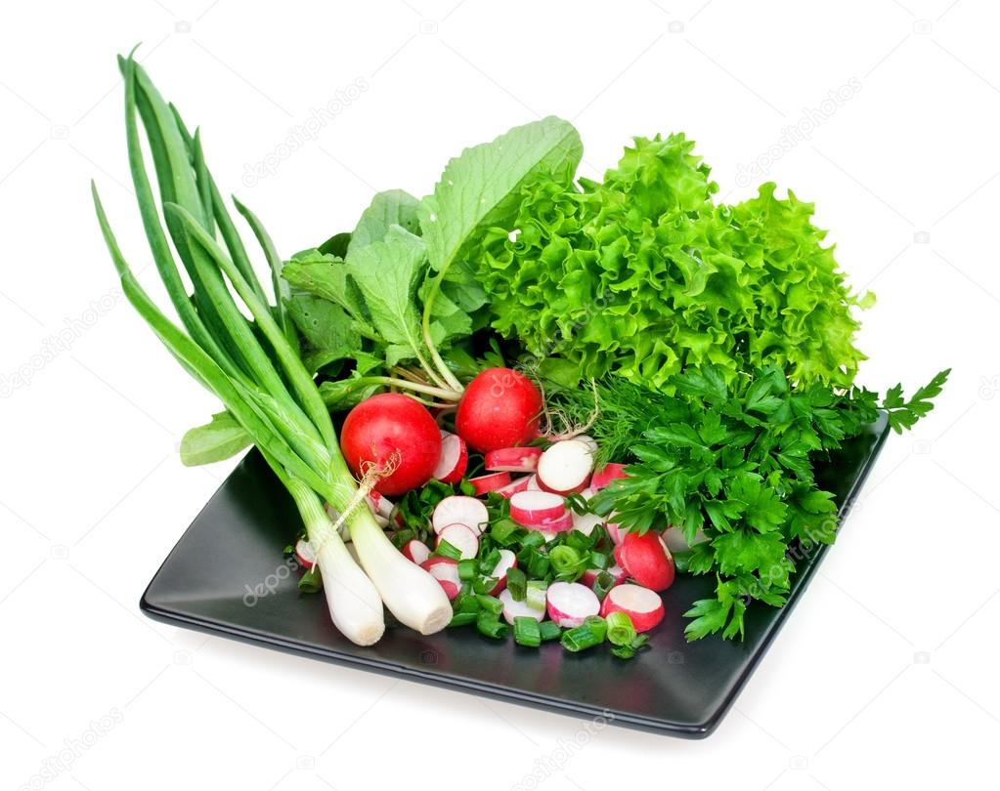

Зелень различная


Многообразие рецептов салатов поражает. Но самыми полезными считаются те, которые были приготовлены только из натуральной растительной пищи. О благоприятном воздействии на организм человека зелени известно давно, поэтому ее рекомендуется включать в свой рацион каждый день. Она насыщена витаминами, хлорофиллом и растительным белком.
Чтобы разнообразить свою кухню, предлагаем ознакомиться с видами зелени для салатов.
Виды зелени для приготовления салатов ЛиственныеОчень богаты витаминами и органически переработанными основными солями. Железом богаче всех других пищевых веществ. Хлорофилл — вещество, придающее листьям зеленую окраску, оказывает на человеческий организм очень благотворное действие: повышает обмен веществ, тонизирует и омолаживает. Кроме того, зеленые листья содержат полноценные белки.
СалатИз витаминов содержит особенно много А. Свойства зависят от сорта и от времени года. Самый богатый минеральный состав дает сорт «ромэн», но осенью этот салат теряет часть своих свойств, а «латук» теряет их уже к концу лета. Есть, впрочем, хороший зимний ромэн. Латук — нежный салат. Предпочтение лучше всего отдавать кочанным разновидностям латука. Ромэн прочен и мягок, эскароль и эндивий твердоваты: это поздние сорта. Салат хорошо сохраняется даже во время жары, если его корнями вниз поместить в посуду с водой (букет салата).

Из культивированных сортов — наилучший французский. Для сыроедения щавель годится только молодой. При постоянном подрезании может давать все лето подходящий продукт, но самый лучший щавель — весенний. Действие его кровоочистительное и тоническое. Употребляют и его стебли.

Французский сорт нежнее немецкого, и больше подходит для сырых растительных блюд, значительно светлее и мельче немецкого. Самый богатый органическими солями овощ, содержит все витамины, в особенности А. Содержит также много калия и железа.

Культивируется во многих крестьянских огородах Ленинградской области. Листья стоит обрезать, когда они достигают 10 см длины. По вкусу напоминает листья одуванчика.

Наилучший сорт имеет темно-зеленые яркие листья (брункресс). Очень богат железом. Жалко, что этот сорт в России почти не разводится. Кресс-салат с очень мелкими светлыми листьями известен своими противоцинготными свойствами, прекрасно разводится в комнатной обстановке, даже зимой.

Одно из самых ценных растений для здоровой кухни, благодаря своим мочегонным, антитоксическим и тоническим свойствам. Листовой сельдерей особенно ароматен. Как правило, едят его листья и стебли. Если употреблять лишь внешние части растения, обрезая их по мере надобности, то одни и те же растения могут долго служить. Рекомендуем ознакомиться со статьей «Повторное выращивание овощей дома».

Употребляется когда она молодая, очень свежая и сочная. Ботва моркови, будучи сквашенная, дает хороший продукт.

Обладает полезными свойствами. Выращивается почти круглый год. Можно культивировать и в горшках, срезая листья и стебель по мере роста. Лучшие сорта крупные. На здоровую кухню идут внутренние части.

Зелень чеснока употребляется только молоденькая (свежая).
Лучшие экземпляры лука — короткие и толстые, следует обрезать кончики листьев (быстро вянут).

Листья для еды не годятся. Необходимо тщательно их обрезывать. Органическая кислота, содержащаяся в сырых стеблях, по-видимому не оказывает того вреда, как когда она переходит в неорганическую путем варки. Стебли хорошо хранить, погрузив их в посуду с холодной водой.

Содержит витамин С, значительное количество кальция и серы. Приверженцы здорового питания употребляют ее, когда стебли достигают не менее 15 см длины, находя в ней тогда особенный хороший вкус.
Как правило, стебли овощей не содержат столько полезных элементов: витаминов, солей и пр., как листья, а овощи, выращенные без света (белые овощи), беднее остальных полезным составом.

Держать в прохладном, вентилируемом помещении или на леднике, при малом количестве, плотно завернутыми в бумагу или погруженными корнями в воду наподобие букета. Если хотите продлить срок хранения еще больше, то в корзиночках, прикрытых бумагой, очистив предварительно от корневых листьев, гнили, вялых частей. Класть надо корнями вверх.
В статье представлена малая часть зелени, которая подойдет для приготовления салатов и иных полезных блюд. Благо природа одарила нас большим количеством растительной пищи.
А вы какую зелень любите добавлять в салаты?